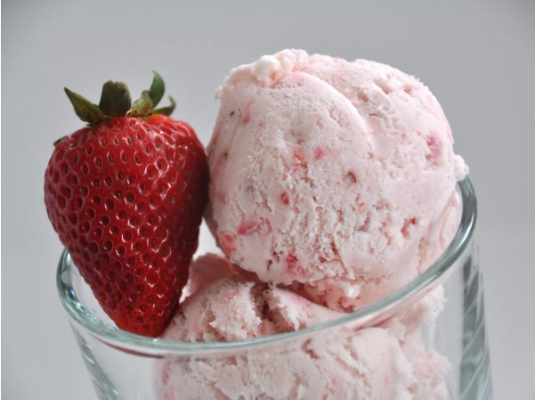

Eggless Strawberry Ice Cream

The Recipe:
This easy strawberry ice cream recipe doesn't use an egg-custard base but still tastes rich and creamy.
Recipe by ejw825
Prep Time: 10 mins
Additional Time: 50 mins
Total Time: 1 hrs
Ingredients
- 2 cups mashed fresh strawberries
- 2 cups whole milk
- 2 cups heavy cream
- 1 cup white sugar
- 2 teaspoons vanilla extract
- ¼ teaspoon salt
- 2 drops red food coloring (Optional)
Steps
- Combine strawberries, milk, cream, sugar, vanilla, salt, and food coloring in a large bowl.
- Pour strawberry mixture into the freezer bowl of an ice cream maker; freeze according to the manufacturer's directions.
Enjoy!